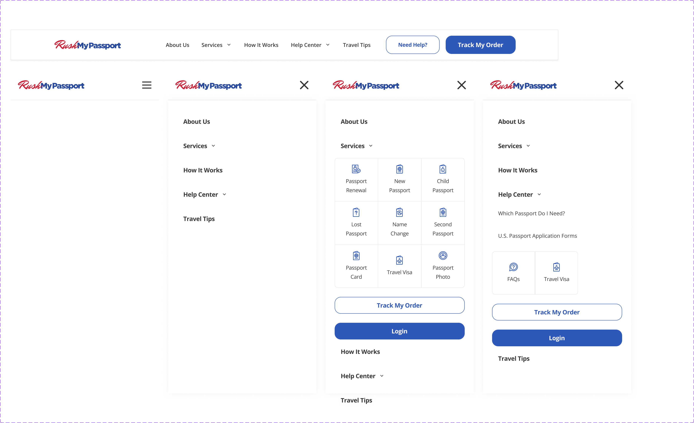
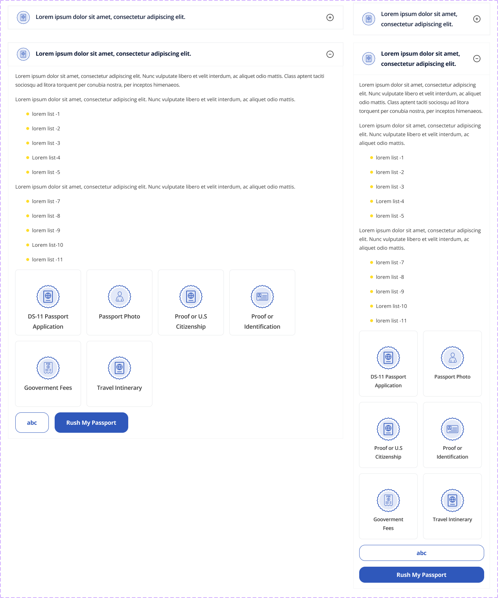
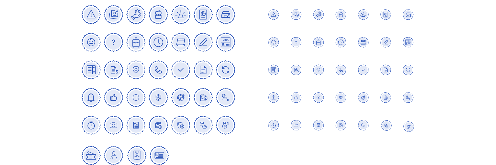
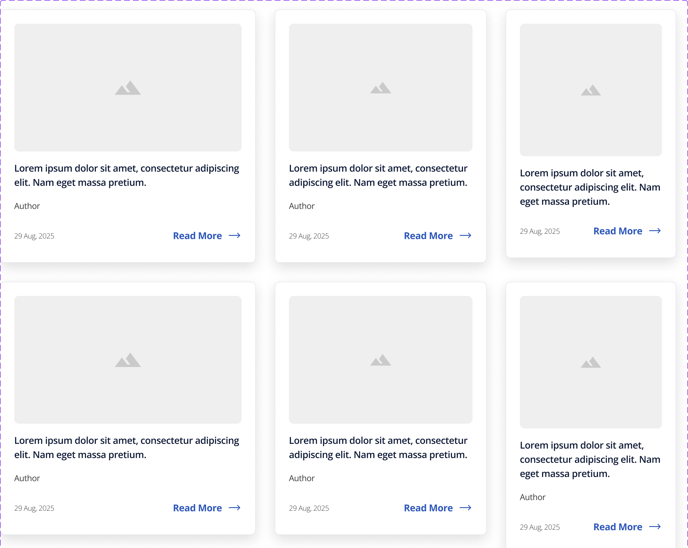
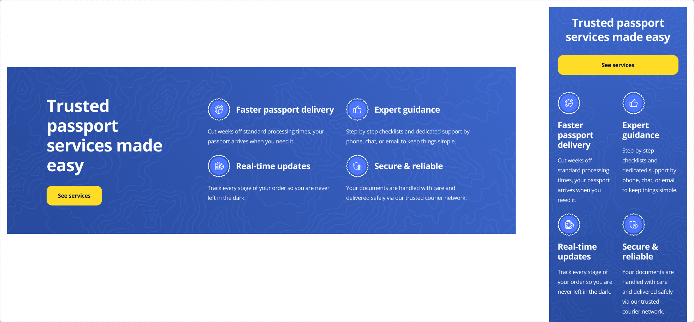
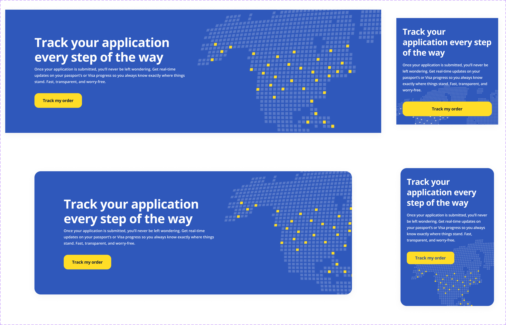
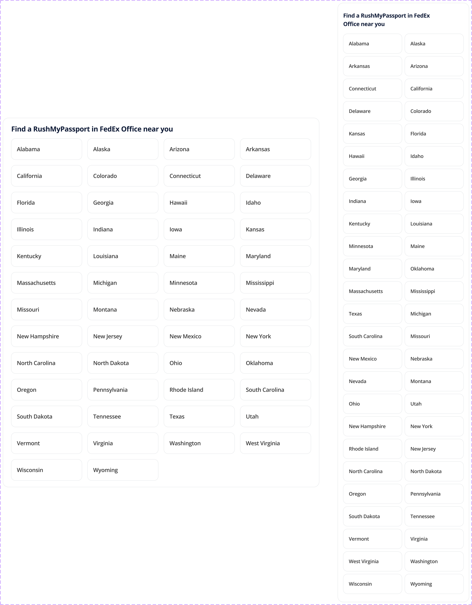

Built a complete design system from primitive tokens to documented components — giving a fast-moving product team the foundation to ship consistently at speed.
Overview
As a UI Designer, I contributed to the creation of a robust and scalable design system for RushMyPassport, with the goal of improving consistency, accessibility, and collaboration across the product ecosystem.
Rather than designing isolated interfaces, we focused on building a unified foundation that would enable teams to create new experiences faster while maintaining a consistent visual language.

Design system — unified visual foundation
01 — My Contribution
I collaborated in defining and refining the core elements of the design system, ensuring every component aligned with usability standards, accessibility guidelines, and the product's visual identity.
My work included
Designing reusable UI components and scalable patterns · Establishing a consistent typography hierarchy for optimal readability · Defining spacing, sizing, and layout rules to create predictable interfaces · Implementing design tokens for colors, typography, spacing, borders, and elevation, enabling seamless collaboration between design and development · Applying accessibility best practices, including sufficient color contrast, clear focus states, semantic hierarchy, and inclusive interaction patterns · Maintaining consistency across desktop and responsive experiences

Navigation component — all states and breakpoints

Accordion — collapsed and expanded states

Pictogram library — scalable icon system

Card article — reusable content pattern

Component tokens — color and spacing bindings
02 — Design Principles
These principles ensured the system could evolve without sacrificing quality, and gave the team a shared framework for evaluating every component decision.
Accessibility First
Designing inclusive experiences that comply with modern accessibility standards.
Consistency
Creating a cohesive visual language across every product touchpoint.
Scalability
Building flexible components capable of supporting future product growth.
Efficiency
Reducing design and development time through reusable assets and standardized patterns.
Collaboration
Strengthening the workflow between designers and engineers through a shared design language.
03 — Design System in Action
The real test of any design system is whether it scales to production pages without custom workarounds. These are live product sections built entirely from system components.

Value props section — built from system components

Order tracking section

Expediting options — layout and card patterns

Listing template — full design system coverage

Component composition in context
04 — Outcome
The result was a scalable design system that streamlined the design process, accelerated product development, and improved consistency across the platform.
More than a collection of components, the system became a shared foundation that empowered teams to build high-quality user experiences with greater speed, confidence, and consistency.
48
Documented components shipped
3×
Faster design-to-dev handoff (team estimate)
47→12
Unique color values consolidated into primitives